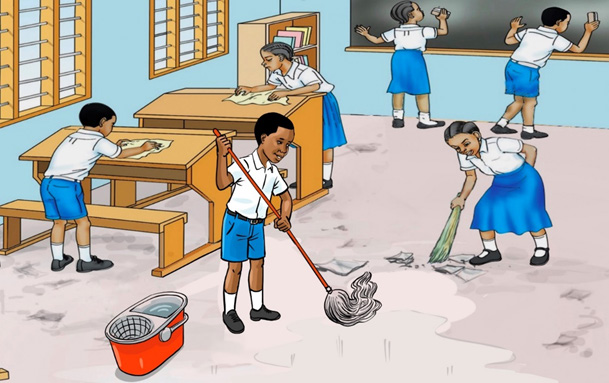

Activity 5
Observe Figure 2, and then identify:

Figure 2: Cleaning a classroom
1. activities done by the pupils in Figure 2.
2. missing cleaning tools in Figure 2.
Observe Figure 2, and then identify:

Figure 2: Cleaning a classroom
1. activities done by the pupils in Figure 2.
2. missing cleaning tools in Figure 2.